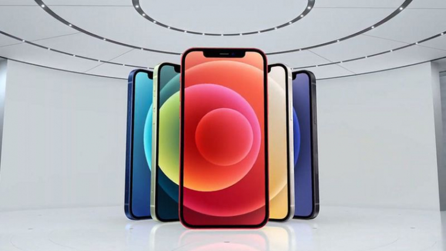

Apple potwierdziło, że nowy iPhone 12 będzie pierwszym modelem w portfolio firmy, który będzie pracował na szybszych sieciach 5G.
Marka rozszerzyła również swoją ofertę o nowy model Mini, który ma mniejszy, 5,4-calowy ekran.

Niektórzy eksperci twierdzą, że nowe funkcje w Iphone’ach dają Apple najlepszą okazję do rozwoju od 2014 roku, kiedy to firma odświeżyła
swoją ofertę, wprowadzając na rynek iPhone'a 6.
"5G przyniesie nowy poziom wydajności w zakresie pobierania i wysyłania plików,
wyższej jakości strumieniowego przesyłania wideo, szybszych
reakcji w grach, interaktywności w czasie rzeczywistym i wielu innych funkcji" – powiedział Tim Cook, dyrektor generalny firmy.
Po raz pierwszy w historii firmy Apple żadne z nowych urządzeń nie będzie połączone ze słuchawkami lub ładowarką. Do zestawu dołączone będzie jedynie przewód USB-C na do szybkiego ładowania. Na stronie firmy widnieje informacja, że decyzja została podjęta ze względu na ochronę środowiska, a to była jedna z decyzji, które przyczyniły się do tego, że Apple udało się zmniejszyć emisję dwutlenku węgla o 2 miliony ton rocznie. iPhone 12 ma taki sam rozmiar ekranu jak jego poprzednik, ale w nowym modelu technologię LCD zastąpiono OLED, która gwarantuje jeszcze bogatszy wachlarz kolorów. Nowy ekran ma wyższą rozdzielczość, a wyświetlacz jest chroniony ceramiczną osłoną, co ma gwarantować czterokrotnie wyższe bezpieczeństwo podczas upadku.
W nowym Iphonie znajdziemy również czip A14 Bionic, który jest najszybszym czipem dotychczas użytym w produkcji smartfonów i umożliwia robienie doskonałych zdjęć – również w ciemności, kręcenie filmów w Dolby Vision i wiele innych czynności. Firma twierdzi, że będzie on w stanie zaoferować możliwość pracy w trybie nocnym bez użycia lampy błyskowej, a także lepiej radzić sobie z kolorami, kontrastem i szumami w trudnych warunkach. Wpłynie on również znacząco na szybkość gier – Apple obiecuje, że dzięki nowemu czipowi gry na smartfony będą w końcu miały jakość gier konsolowych. Nowością w przypadku świeżego produktu Apple jest też magnetyczna matryca z tyłu telefonu, która pozwoli lepiej przymocować smarfon do bezprzewodowych ładowarek, a także połączyć go z dedykowanymi akcesoriami – etui, czy małym portfelem na karty.
Firma Apple nie była pierwszym producentów smartfonów, który sięgnął po technologię 5G – jako pierwszy zainwestował w nią Samsung, wypuszczając w lutym 2019 roku model Galaxy S10, w niedługo potem w jego ślady poszły firmy Huawei, OnePlus i Google. Ze strony Apple nie było to jednak ociąganie się, lecz przemyślana strategia – firma ta rzadko jest pierwszą, która uruchamia nowe technologie – zazwyczaj czeka, aż będą one wystarczająco dojrzałe, by zbudować na nich jak najlepsze doświadczenia dla swoich klientów. Nowe modele smartfonów od Apple pojawią się w sklepach już niebawem. W pierwszej kolejności Apple udostępni do sprzedaży modele iPhone 12 i iPhone 12 pro (23/24 października), iPhone 12 Mini pojawi się w salonach 13/14 listopada, a iPhone 12 Pro Max – 20/21 listopada.